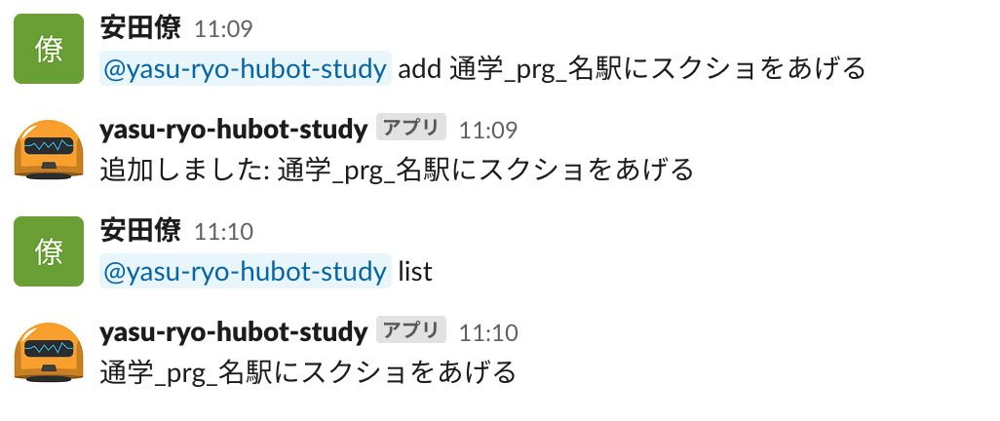

作品
N予備校のプログラミング入門を3章の途中まで終わらせました。その中で作ったものを下に載せます。
・今日の日付
↑JavaScriptのPromiseという関数を練習する際に作ったHTMLです。今日の日付が確認できます。
・あなたの今年の恋愛運は？
↑HTML,CSS,JavaScriptを学ぶ上で、あなたのいいところ診断という教材を改良して作りました。
・CSSを使ったアニメーション
↑CSSを使って簡単なアニメーションを作る練習をしました。
・JavaScriptを利用したストップウォッチゲーム
↑JavaScriptを使って簡単なゲームを制作しました。
・残りの寿命
↑JavaScriptを利用して「2004年10月25日生まれの人が80歳まで生きる場合の残りの寿命」を秒数で表示しました。
・タスク管理bot
↑下の画像のようにSlackで使えるタスク管理Botを作成しました。仮想環境上のサーバーを起動していないと使えないので普段使いはできません。 
将来の展望
現時点で私の夢は「英語が話せるITエンジニア」です。ですがITエンジニアと一言で言っても色々な専門分野があります。まだどの分野のエンジニアになるのかは決まってはいませんが、自分の理想と一番近いものは企画系ITエンジニアです。プロNの経験を活かして働きたいです。